前言
大概是兩年前，稍微玩了一點點的 Docker，不過當時的 Docker ，底層還是使用 Linux 核心，
所以不用說，自然也只有 Linux 的相關應用可以完美整合；所有很多寫 Node.js 的朋友，
也就早早的整合進去使用了。
而那個時候，小弟我就覺得這東西還滿好玩的，所以當初就使用 Hyper-V Run Ubuntu 再 run Docker
( 因為底層必須是 Linux API )
後來… 今年 3月 . Docker 推出原生版本的管理工具 Docker for Window
而當時，( 沒記錯的話 )，工具底層直接使用了 Alpine Linux
( Alpine Linux 當然是 Run 在 Hyper-V 下.. 只是這個 VM 的控管，是由 Docker 管理工具控管 Hyper-V 的 VM , 不用我們去處理 )
所以簡單的說，這裡的原生，指的不是原生的 Windows API，而是不使用 VirtualBox.
而是使用 Hyper-V…但骨子裡，還是使用 Linux API .
而近年因 CEO 大換，而大走 Open Source 的 MS ，當然也很努力地在做這塊，
但這次，不是像以前一樣，是做一個新的 Container 來打 Docker，
這次，是和 Docker 合作，實作出以 Win 平台為核心的 Docker。
於是，底層不再只有 Linux API , 而是多了一種 Windows API 的形式，
只是引擎還是使用 Docker .
也因此，底層是使用 Linux API 的 Docker 容器，是不能拿到 Windows 上面跑的。
但相同的，使用 Windows API 這種底層的 Docker Container，
就可以在上面執行 IIS，SQL Server Express 等等。
而在 Windows Server 2016 上，除了用 Hypver-V 模擬 Linux API ( 透過 Docker 命令 ) 外，
還包含了使用 Hypver-V Run Windows API 的 Container ( 透過 Docker 命令 ) ，
更提供了 Native 模式，來 Run Docker Container ( 透過 Docker 命令，但不用 Hyper-V )，
能運行那麼多種的 Docker Container，目前只有 Windows 辦的到喔.. ( 抖抖 )
( 這種感覺，就像是 OneDrive , SharePoint , O365 一樣的複雜.. )
( 備註，上面提到的 Docker 命令，指的是，我們只要再 cmd 下 docker xxx 命令，
就可以 run 起 Docker Container，而不是像以前依樣，要先啟動 Hyper-V ，
然後再 Hyper-V 上 RUN Linux ，然後再 run Docker ，另外，雖然是下命令，
但部份的底層還是使用 Hyper-V )
當然，這裡面有太多底層的技術，小弟就不在這邊獻醜了，畢竟這塊已經有很多人寫得很詳細也寫得很好；
而今天，只是來看看，在 Windows 10 上，初體驗 Docker for Windows
目前想在 Windows 10 上實現 Docker，Docker 官方則提供了兩個方案，一個是舊的；
Docker Toolbox ，一個則是新的 Docker for Windows。
基本上，舊的 Docker Toolbox 就不用提了，就讓它變成時代的眼淚吧…
( 舊的就是使用 VirtualBox 來虛擬.. )
所以這篇主要會來介紹 Docker for Windows .
p.s 這篇主要是由 Docker 官方文件 而來，
並且根據裡面的內容，進行大量的補充，讓大家在過程中，可以更加地了解細節。
安裝 Docker for Windows
Docker Windows 的所需條件，自然就是 Windows 10 ，且必須為 Build 10586 以上版本，
而且必須啟用 Hyper-V 和容器功能；如下圖。
是低，您沒有看錯，基本上，到目前為止，Windows 10 上運行 Docker for Windows ，
是依賴著 Hyper-V 的，而且是沒有 Native 模式的.
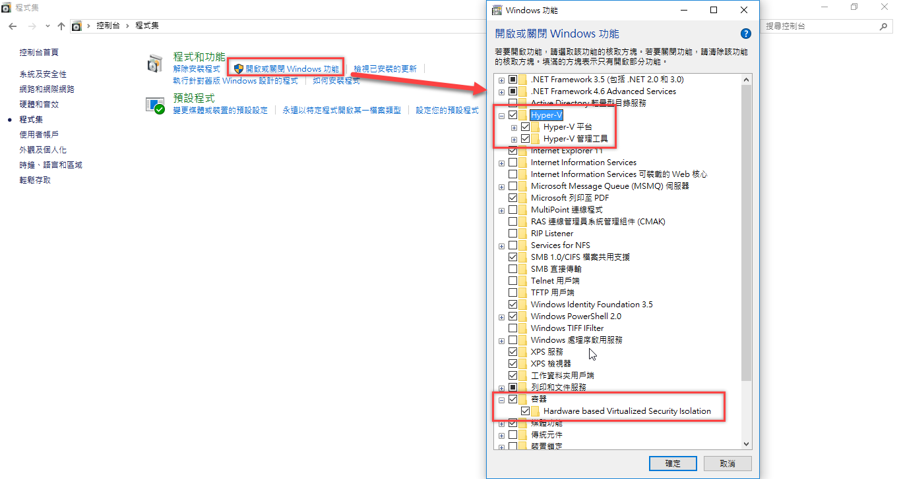
當啟動後，我們就可以到底下這個位置下載 Docker for Windows
會到這個位置下載的原因是因為，目前如果要 run Windows Container，只能下載 Beta 版本。
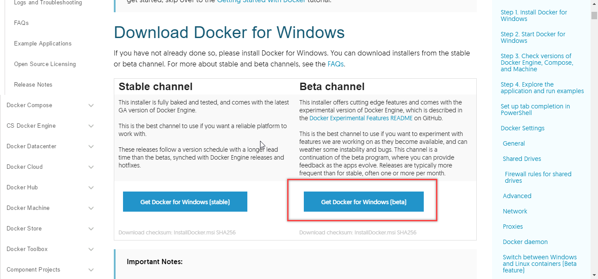
然後就進入快樂的安裝。
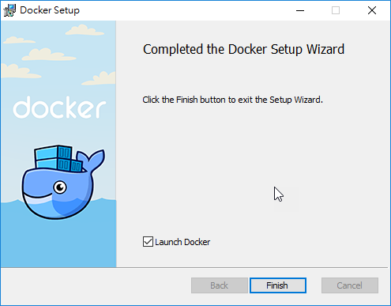
成功之後，會出現如下的視窗。
另外，請注意，小弟在後來的 Mac 下，使用 Parallels 虛擬 Windows 10 ，
再裝 Docker for Windows，在 Linux 模式下會出錯，
而 Windows 模式下，則是正常的；根據官方的文件敘述，目前在 Mac 底下，
又模擬 Windows 10 下再安裝 Docker 的這種情境，是不被正式當作 Issue 支援的；
另外根據官方所敘述，他建議，如果真的想在 Mac 模擬 Windows ，
在上 Docker，可以使用 Windows 2016，因為 Windows 2016 有原生版本的，
而 Windows 10 目前只有 Hyper-V 版本。
( Switch 模式的說明，在下面會敘述 )
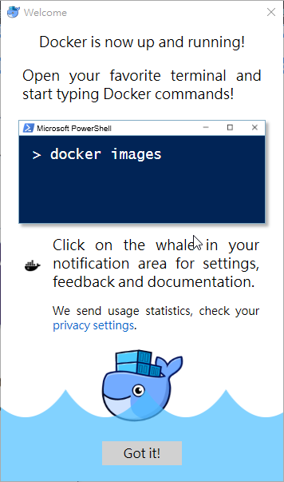
初體驗
接下來，如官方教學，我們可以試著下底下指令。
從底下指令，我們可以看到 Docker 的版本。
其中 docker ps 可以看到目前有哪些容器在運作中，現在自然沒有任何容器可以運作。
1 | docker --version Docker version |
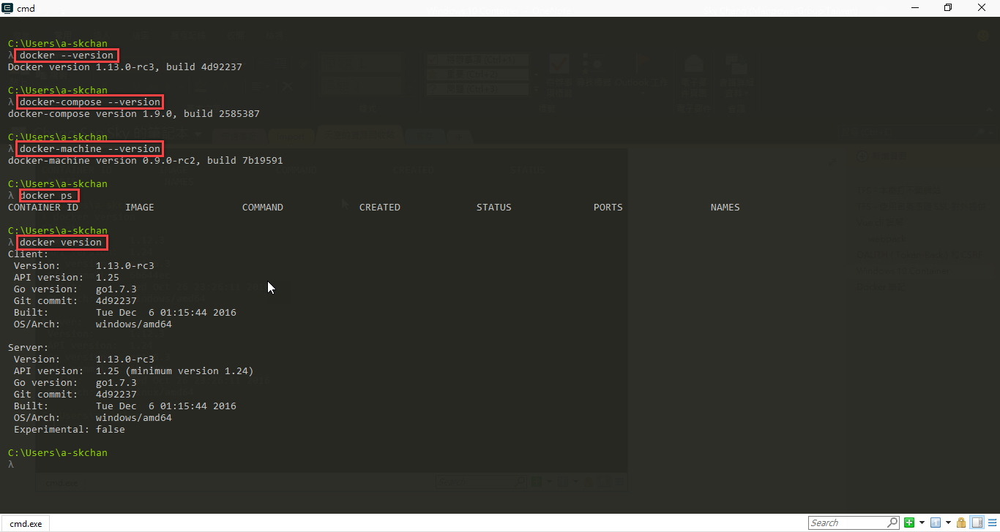
接下來，我們可以下
1 | docker run hello-world |
這邊會下一個 Ubuntu 的 Images，並且會把這個 Container run 起來；
這個容器是 Linux Container 的，所以如果已經 switch 到 Windows Container，請要先切回 Linux Container
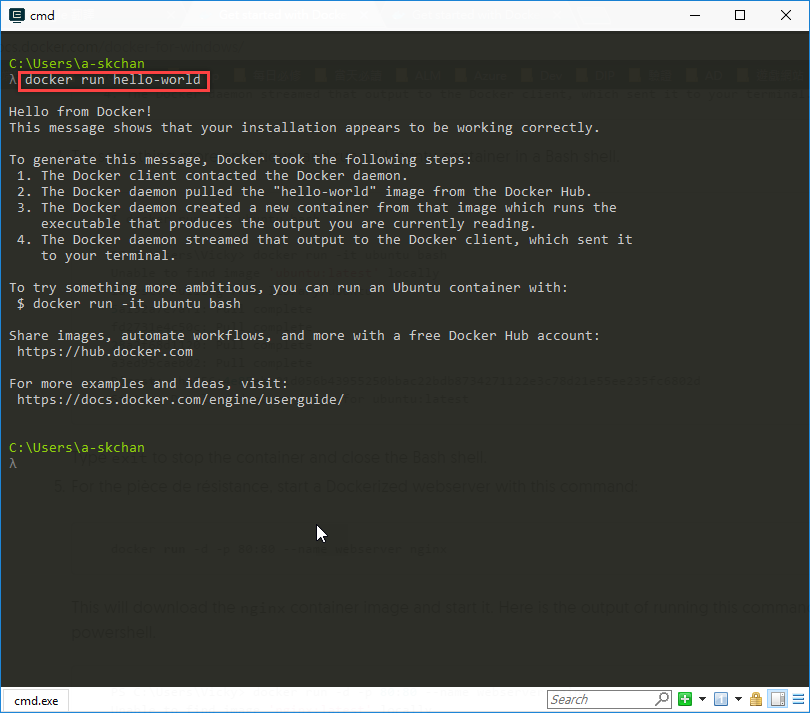
在 Docker 裡面，其實是有分 Detached 和 foreground，所謂的 Detached 就是所謂的背景執行 ( -d 參數 )，
背景執行的時候，基本上，要和 Container 溝通，就只能靠網路芳鄰等機制了；
也就是說，沒辦法用終端機進行溝通，除非我們再把他給 attach 。
而如果要使用 foreground，我們則要使用 -it 這個參數。
所以我們要下 docker run -it ubuntu bash 這個命令的意思就是，我們要運行 ubuntu，
並使用 foreground 模式，並且於啟動後，進入 bash .
當然，大家也可以試試看，如果沒有加 -it ，基本上，只 run 一下，馬上就跳回來了 XDD
那 -it 是甚麼意思呢，根據官方文件如下。
-i : Keep STDIN open even if not attached
-t : Allocate a pseudo-tty
簡單的說，加上 -I ，無論有無 Attach ，都會確保 STDIN 有持續開啟，而使用 -t ，則會分配一個 tty 。
( 何謂 STDIN http://blog.csdn.net/qq_21792169/article/details/50470424 )
所以如果只輸入 -t ，沒有 STDIN ，那畫面就會顯示在那邊，一動也不動，也沒辦法輸入；
所以通常我們必須使用 -it ，才能進行操作。
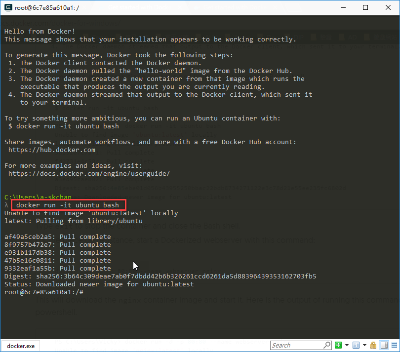
我們也可以使用
1 | docker images |
來看看目前已經下載了那些 images。
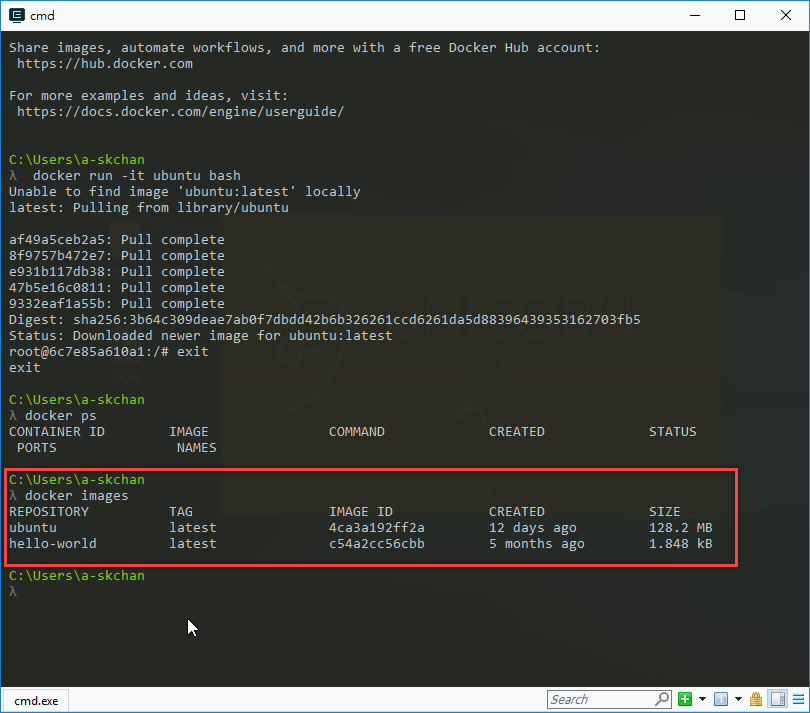
試玩 Windows Container
接下來，我們要下載 Windows Container，
使用
1 | docker pull microsoft/nanoserver |
正常情況下，應該會出現底下錯誤
1 | Using default tag: latest |
那表示目前你使用的是 Linux Containers ， Linux Container 和 Windows Container 是無法共用的，
也因此，當我們要使用 nanoserver 這個 Container，是 Windows 的 Contaniner ，
所以如果在 Linux Container 模式底下，是無法使用的，故我們要進行切換一下。
( 如果看不到這個切換指令，那表示你安裝的是標準版的 Docker for Windows ，請改安裝 Beta 版本 )
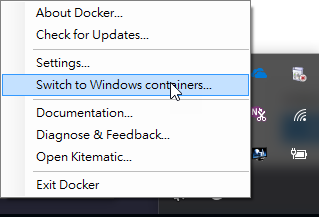
切完後，再下載一次。
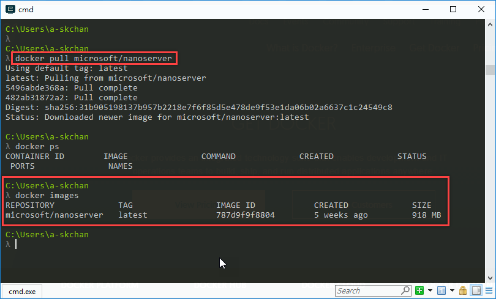
接著，我們就可以把 Windows Container run 起來
1 | docker run -it microsoft/nanoserver cmd |
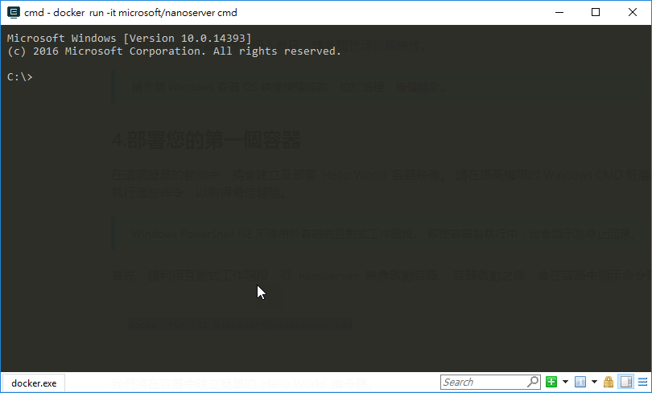
管理 Container 與建立 Image
接著，我們依據官方的教學，來建立一個新的檔案，只要執行這個 ps，他就會於畫面顯示
Hello World.
1 | Powershell.exe Add-Content c:\helloworld.ps1 'Write-Host "Hello World"' |
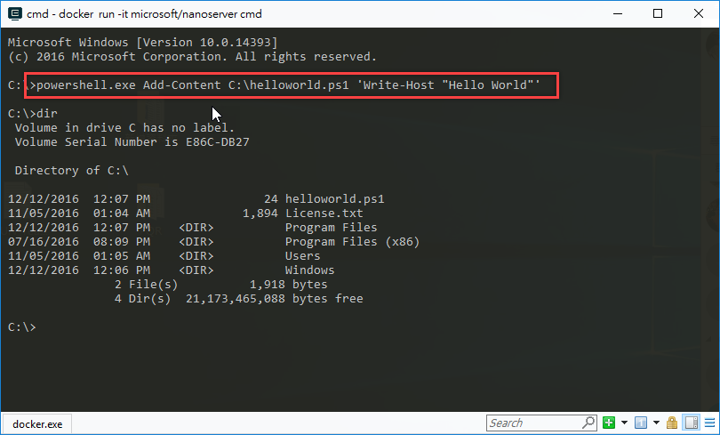
還記得一開始我們執行過 docker ps 嗎，現在我們使用另外一個指令。
1 | docker ps -a |
透過這個指令，我們可以看到已經被”終止”的 Container；是的，沒看錯，是被終止。
如下圖，我們可以看到，小弟我其實執行了兩次 docker run -it microsoft/nanoserver cmd，
第一次的時候，直接在 cmd 下 exit 離開。
第二次的時候，則是我們剛剛的上一步範例，使用 PowerShell.exe 建立了一個新的檔案。
所以，其實我們每次執行 docker run -it microsoft/nanoserver cmd
都是會產生一個全新的 Windows Container 喔!!
而離開的時候，其實那個 Container 還是存在的。
但是，如果關機了，這個 Container 就會消失了，換言之，剛剛你做的一些事情
( 例如使用 PowerShell.exe 建立的檔案 )
就等同於不存在了。
所以，我們必須要使用
1 | Docker commit [CONTAINER ID] [名稱] |
來將剛剛改變的容器，變成映像檔 ( Image )
所以如下圖，當我們下完 commit 後，我們就可以看到，新的 Image hellowold 產生了；
當產生了這個 Image 後，我們就可以像影分身之術一樣，產生多個鳴人；
阿不是，是多個 Container。˙
p.s 如果已經離開，被終止了，而想重新啟動，可以使用 Start，然後用 attach 進入此容器
1 | Docker start [CONTAINER ID] |
如果想刪除其中一個 Container，可以用
1 | Docker rm [CONTAINER ID] |
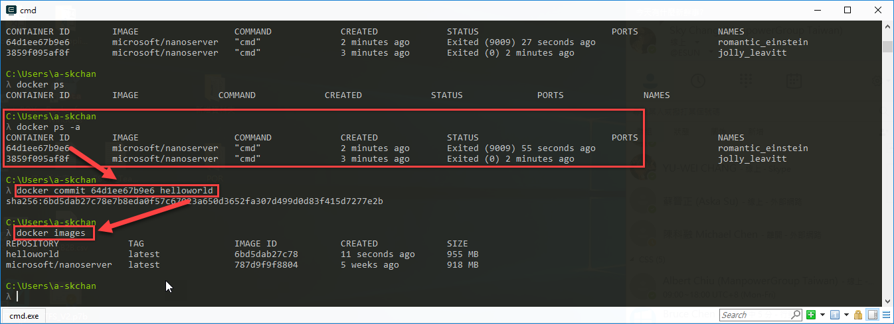
當我們產生一個新的 image 後，我們就可以使用 run 的方式，在 run 出一個 Container，
但這邊加上了 –rm 的參數，
表示當我們 run 起來這個 Container 並且執行完 helloworld.ps1 後，
會自動刪除這個 Container。
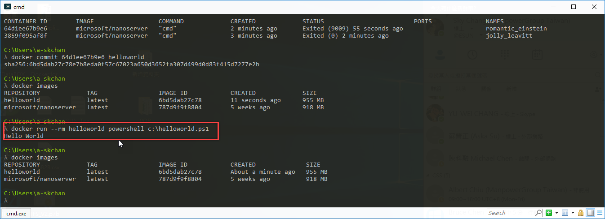
最後，如果覺得連 Image 都不需要，那可以直接下 rmi 來刪除 Image.
1 | Docker rmi [REPOSITORY] |

到這邊，基本上，大家應該就會對於 Docker 有了一個基礎的認識，接下來，
我們就會開始進入，IIS 等相關服務嚕!
後記
等了很久，終於看到 ( 也終於比較有時間 ) 可以好好的測試一下 Windows Container，
後續，就讓我們持續看下去!!
參考資料
- https://msdn.microsoft.com/zh-tw/virtualization/windowscontainers/quick_start/quick_start_windows_10
- https://docs.docker.com/docker-for-windows/
- https://hub.docker.com/r/microsoft/nanoserver/
- https://forums.docker.com/t/unknown-blob-when-pulling-microsoft-nanoserver/20291/5
- https://docs.docker.com/engine/reference/run/
- http://dockone.io/article/152
- https://philipzheng.gitbooks.io/docker_practice/content/container/
- https://docs.docker.com/engine/reference/commandline/